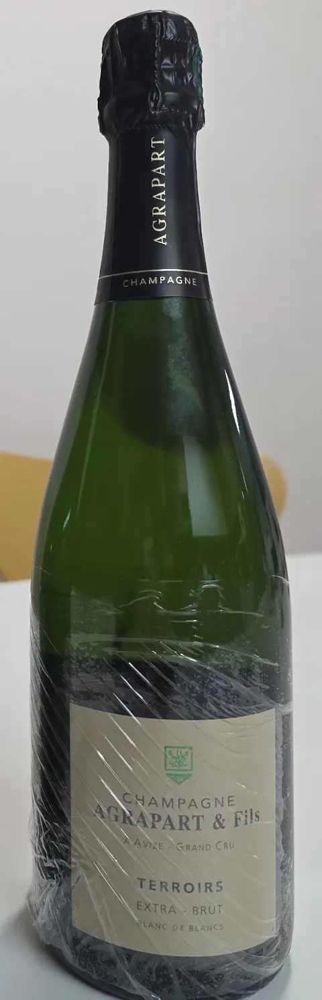
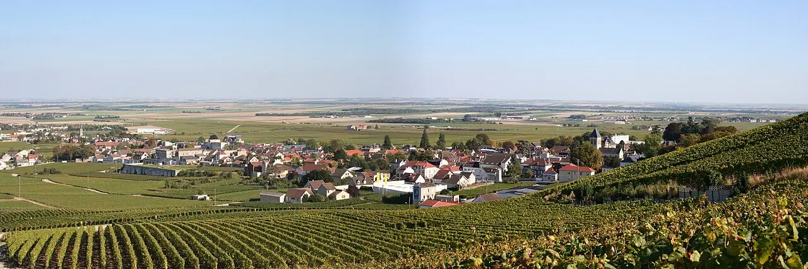
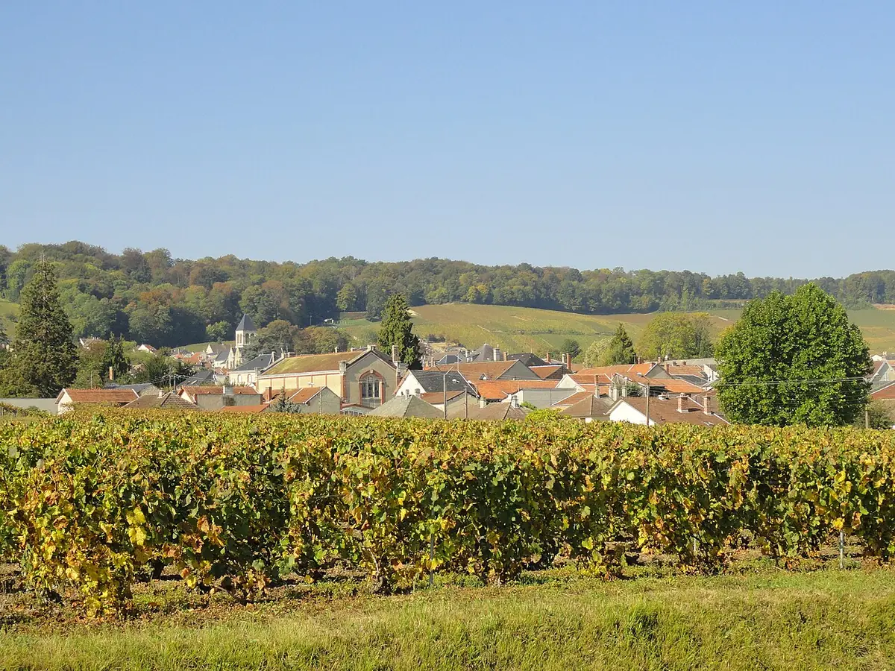
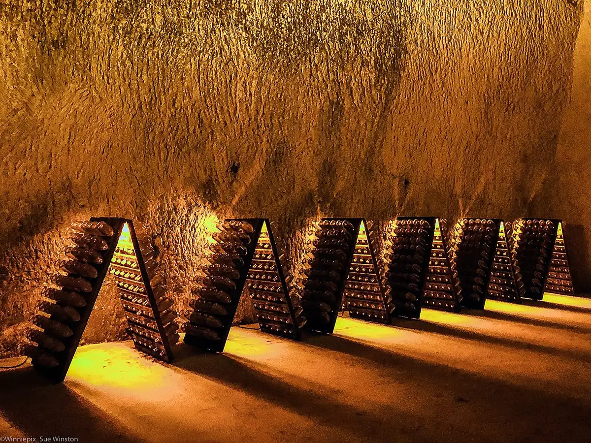
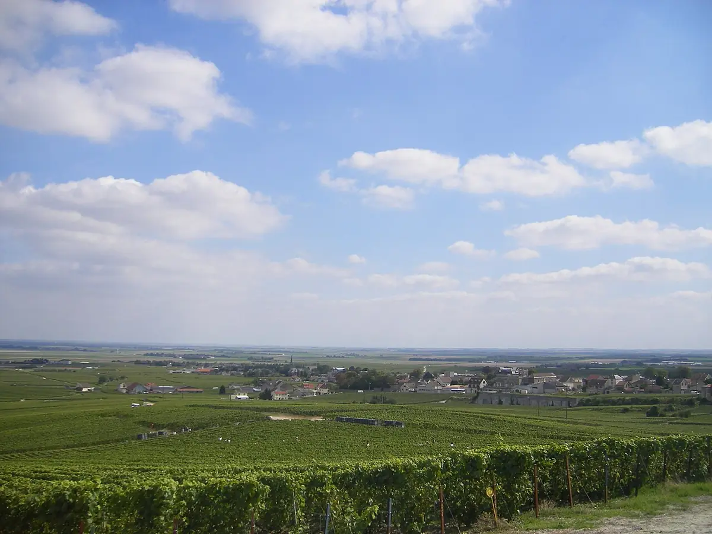
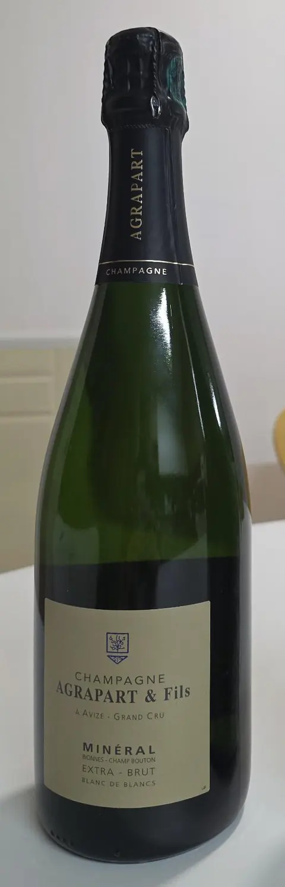
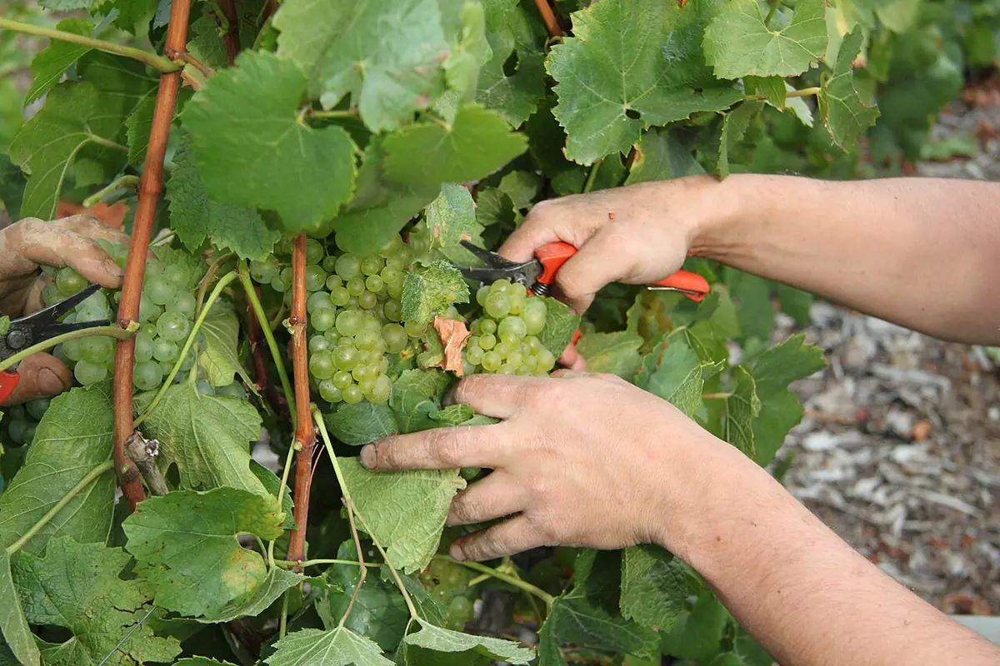

NV · Extra Brut · Grand Cru
Terroirs
- 밭
- Avize·Oger·Cramant·Oiry 그랑크뤼
- 빈티지
- 여러 해를 섞은 블렌드
- 양조
- 오크통 약 25% 라벨, 일부 가려짐
- 도자주
- 5 g/L 라벨
- 마시기
- 8~10°C
- 병입
- 2021년 5월
- 데고르주망
- 2024년 10월
- 병 속 숙성
- 약 41개월 라벨 날짜로 계산
샤르도네 하나로 백악토를 끝까지 파고드는 재배자. 그런데 이 집엔 이상한 이야기가 꽤 많습니다.

평론가들이 Avize와 Côte des Blancs를 대표하는 재배자로 꼽는 집. 주력 큐베 대부분이 그랑크뤼 블랑 드 블랑입니다.

Avize·Oger·Cramant·Oiry 그랑크뤼에 흩어진 작은 구획을 따로따로 다룹니다.
오래 유기농으로 재배했지만 홍보 문구로 쓰지 않았습니다. 그냥 맞는 방식이라서라고.
잘 익은 노목 포도에 기대고, 마무리 도자주도 낮게 가져갑니다.
많은 재배자가 최근에야 자가 병입을 시작했지만, 이 집은 시작부터 자기 이름으로 병입했습니다.
Terroirs는 네 그랑크뤼 마을의 포도를 섞고, Minéral은 그중 Avize와 Cramant의 두 구획에서만 나옵니다. 마을 사이 거리는 차로 몇 분입니다.
Avize는 샹파뉴의 한가운데쯤입니다. 북쪽 Reims까지 직선 약 32km, 파리까지 약 122km. 남쪽 Aube의 Côte des Bar(Les Riceys)는 약 112km 떨어진 별개의 산지입니다. 앞서 비교한 Egly-Ouriet의 Ambonnay는 약 17km 북동쪽 Montagne de Reims 남쪽 비탈에 있습니다.
마을 위치는 마을 중심 기준이고, 거리는 좌표로 계산한 직선거리입니다. Champboutons·Bionnes 구획의 정확한 경계는 표시하지 않았습니다. 지도 © OpenStreetMap 기여자.
Avize의 0.6ha 구획은 기계 없이 사람과 말이 일굽니다. 그 밭을 가는 말의 이름이 Vénus. 큐베 이름도 Vénus입니다. 1959년에 심은 샤르도네, 도자주 없는 Brut Nature.

Vénus의 구획 이름은 La Fosse aux Pourceaux. 직역하면 돼지들의 구덩이쯤 됩니다. 이름과 와인의 격차가 꽤 큽니다.
보통 샴페인은 병에 설탕과 효모(티라주 리큐어)를 넣어 2차 발효를 일으킵니다. EXP는 대신 자기 밭의 포도즙을 넣습니다. 가당 없음, 도자주 0. 만들기 매우 까다로워 생산량이 극히 적습니다.

Avize의 한 구획에 샤르도네·피노 누아·뫼니에와 함께 Arbane, Petit Meslier, Pinot Blanc 같은 옛 품종을 섞어 심고, 한꺼번에 따서 함께 양조합니다.
2018년 합류한 아들 Ambroise가 Avenay-Val-d'Or의 피노 누아로 스틸 레드(Coteaux Champenois)와 로제를 만들어 2025년에 처음 내놓았습니다.




연결 중…
라운드마다 점수 = 맞힌 개수 − 노트에 없는 것을 고른 개수. 다른 사람이 제출하면 자동으로 갱신됩니다. 각 라운드 정답은 내가 그 라운드를 제출해야 보입니다.
정답 기준은 평론가·판매처 시음 노트에 실제로 나온 표현입니다. Minéral 노트는 2017·2019 빈티지 평론에서 모았기 때문에 오늘 마시는 2016과 다를 수 있습니다.